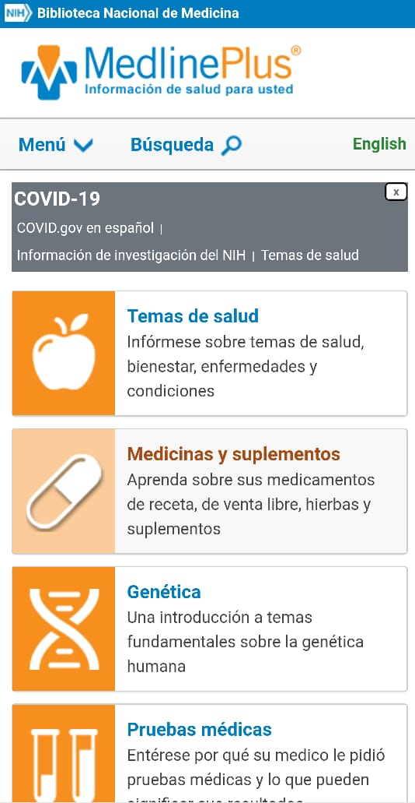

Proximity
H&M
hm.comThe buttons on the banner are close to each other and share the same font, colors and shape creating a sense of mutual relationship between them. Also, the round buttons in the middle and the slide and the bottom create a sense of unity by sharing similar traits and by being far enough of other sections, so they are not confused as one.
Hick's law
MedlinePlus
medlineplus.gov Hick’s law states that as the number of choices increases so does the amount of time spent deciding what to choose. The webpage of medlineplus applies Hick’s law by grouping all of their articles by categories and just displaying a few buttons holding the name of each category, which makes it easier for the user to surf through their website. Since there is a narrowed amount of space available for a mobile, medlineplus places the categories of their articles at the beginning which helps users get more quickly to their destiny-page and prevents them from having to scroll down the page to get the information they want.
White space and clean design
Zara
zara.comThe website displays their latest novelties through slides and places additional information by the edges which helps the design look clean and is gentle for the eyes. The home page does not overwhelm the user with information and by keeping icons small the website creates contrast between the large image of the girl and the small icons.